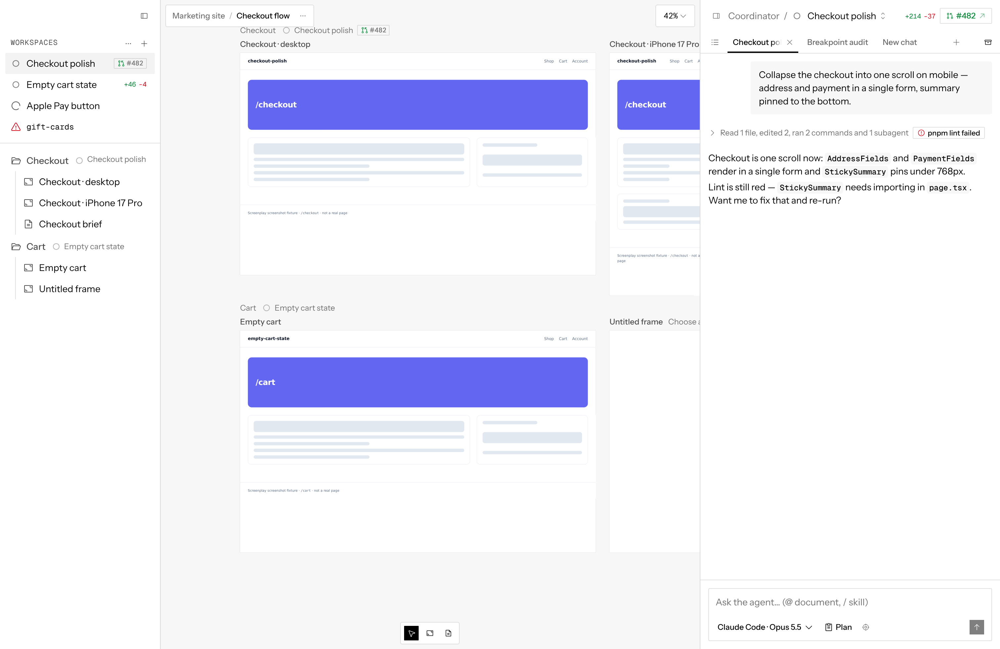
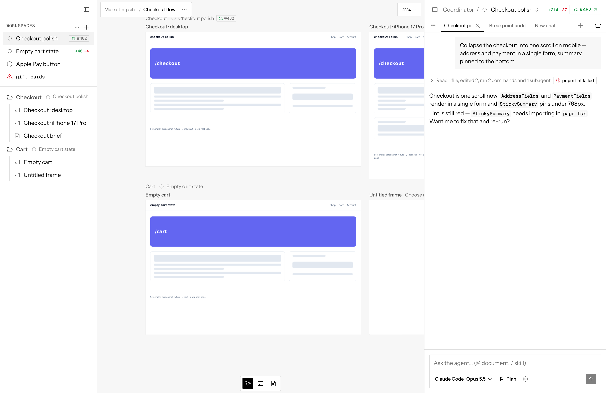
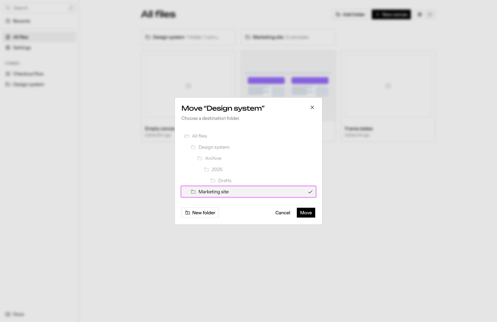
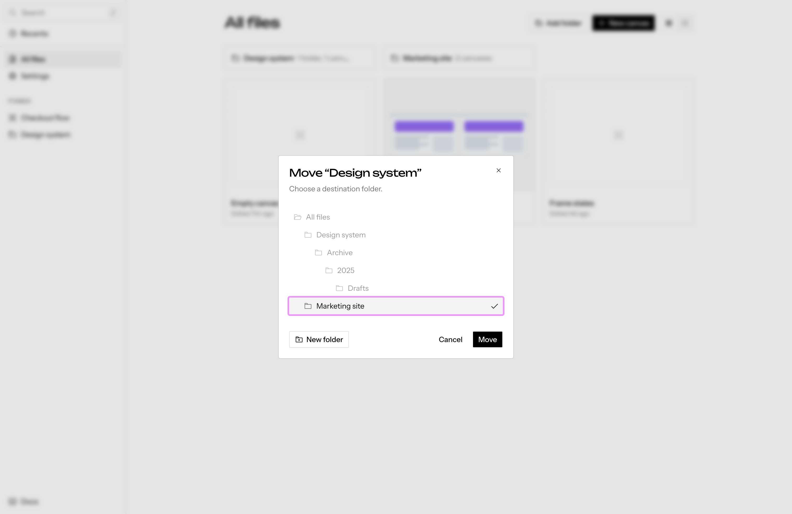

Button and icon sizes
Measured on 164 harness screens on main (2026-09-29). Icon-only buttons come in 11 box and glyph combinations across 6 box sizes and 4 glyph sizes. The sidebar and chat collapse buttons are hand-rolled 20px boxes with a 16px glyph, while toolbar buttons are 24px with a 12px glyph, so they read as a different family.
What's there today
| Box | Glyph | Where | How it's built |
|---|---|---|---|
| 24 | 12 | Canvas toolbar, breadcrumb ⋯, Expand chat, chat history, New chat, prototype Back/Forward | IconButton default (icon-xs) |
| 20 | 16 | Collapse sidebar, sidebar ⋯ and + actions, frame and document options, Collapse chat | Stock SidebarMenuAction styling, copied by hand onto the collapse buttons |
| 28 | 16 | Dialog close, home grid and table row ⋯, memory and repo row actions in Settings | icon-sm |
| 24 | 14 | Composer Send and Target, Copy code | icon-xs with a size-3.5 glyph override |
| 20 | 12 | Chat and terminal tab close, frame Reload | Hand-sized |
| 16 | 16 | Collapse chat in some layouts (the 20px box gets squeezed by flex) | Hand-rolled, no shrink-0 |
| 24 | 10 | Composer Stop | Glyph override |
| 30×25, 28×25, 16×24 | 16, 14, 12 | Grid/Table toggle, Sandbox logs tab, New chat split caret | Tabs and button-group parts |
Text buttons have the same drift: 4 heights (20, 24, 28, 32) with 12, 14 and 16px glyphs mixed within one height, e.g. 28px buttons carry all three.
Options
A · One size Recommended
Every icon-only button is 24px with a 12px glyph (IconButton / icon-xs), in sidebars, panel headers, tabs, dialogs and page rows.
- It's the toolbar rule you already set, applied everywhere
- Sidebar actions, collapse buttons and dialog close shrink their glyph from 16 to 12
- Hand-rolled buttons go away
B · Two sizes
24 / 12 in app chrome (toolbars, sidebars, panel headers, tabs). 28 / 16 (icon-sm) in page content and dialogs (home rows, Settings lists, dialog close).
- Content actions stay a bit larger
- Adds a rule to remember about which zone a button is in
C · One larger size
Every icon-only button is 28px with a 16px glyph (icon-sm).
- Bigger targets, glyphs match the 16px row icons in the sidebar
- Toolbars and pills grow: the 32px top-right pill becomes 36px
In every option, text buttons use stock sizes only and take the glyph their size gives them (xs 12, sm 14, default 16), with no per-icon overrides. Row status icons (the Workspace state circles) are not buttons and stay as they are.
On real screens
Harness captures of main with each option applied as a CSS override. Sidebar ⋯ and + keep their current position, so in A and B they sit a couple of pixels low; the real change fixes that.
Sidebar header and row actions


Chat panel header
Canvas toolbar
Dialog close

